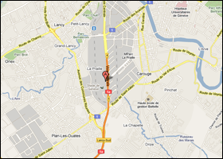
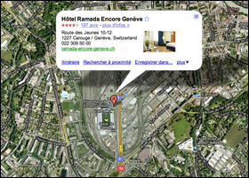

Le lieu
Pour cette première édition de Soft-Shake, notre souhait était de trouver à Genève un lieu à la fois confortable, accessible et apte à recevoir les nombreux participants attendus.
Cette première édition se déroulera au Centre de Conférence de l’hôtel Ramada Encore Genève.

Logé entre le Stade de Genève et le centre commercial de la Praille, cet espace de plus de 1‘200 m2 peut accueillir plus de 800 personnes.
Nous avons retenu ce site après l’avoir visité pour les avantages qu’il offre.
Il est tout d’abord bien situé pour un centre de cette taille. A la sortie de l’autoroute, avec son parking de 900 places, l’endroit est facilement accessible en voiture. Il est également desservis par 5 lignes de bus.

L’espace de détente et de restauration est ouvert et lumineux. Il offre une vue panoramique sur l’intérieur du stade de Genève. Un endroit idéal pour l’échange et le réseautage. C’est aussi pour cette raison que nous avons privilégié un buffet le midi par rapport à un repas dînatoire traditionnel.
Accolé au centre commercial de la Praille l’endroit est un espace de vie accueillant. Adjacent à l’hôtel 3 étoiles du même nom, le centre Ramada offre des espaces raffinés et de qualité.

Quand aux salles, notre principale préoccupation, elles sont spacieuses et agréables. Les différentes tailles et configurations possibles nous permettent d’accueillir les sessions et leur différents formats (état de l’art, workshop...) dans un confort assuré.
L’espace détente est adjacent à la salle principale pouvant accueillir plus de 500 personnes assises : idéale pour notre session plénière.
C’est pour ces raisons que nous avons retenu ce centre sur les 3 autres de même dimension que nous avons aussi visités.
Un plan d’accès détaillé sera prochainement disponible sur notre site.
Voir aussi www.ramada-encore-geneve.ch
Accès
|  |  |
Voiture
Nous vous conseillons de vous garer dans le grand parking du centre commercial de la Praille (900 places), payant mais adjacent au centre de conférence. Ce parking est directement accessible depuis la fin de l'autoroute A1a.
Attention : pour emprunter les autoroutes suisses, vous devez posséder la vignette autoroute d'une valeur de 40 CHF (en vente notamment notamment au poste de douane situés sur l'autoroute, plus d'informations).
Attention aux embouteillages d'un lundi matin !...
Transport en commun
Vous pouvez :
- Soit utiliser les différentes lignes de bus qui desservent directement l'arrêt Stade de Genève (4, 21, 22, 42, 42, D)
- Soit venir via les ligne de tramway 15 et 17 (arrêt "P+R Etoile"), ou 12, 13 et 14 (arrêt "Bachet-de-Pesay"), puis prendre un bus ou finir à pied depuis (1 km depuis l'arrêt "P+R Etoile", 200m depuis arrêt "Bachet-de-Pesay")
Comptez une petite 1/2 heure pour venir de la gare de train ("Gare Cornavin").
Choisissez votre itinéraire depuis le site des Transports publics genevois : tpg.ch
Vous pouvez télécharger le plan du réseau depuis leur site : Plan du réseau (PDF)
Attention :
- Les personnes arrivant en avion peuvent obtenir un ticket de transport gratuit valable 80 minutes
- Les touristes résidant à l'hôtel peuvent recevoir une "Geneva Transport Card " permettant de circuler gratuitement sur le réseau genevois (pendant toute la durée de leur séjour)
- Pour plus d'informations : Billet Gratuit ! (PDF)
Résumé
Pour plus d'informations, reportez vous:
- aux détails d'accès sur le site de l'hôtel
- au plan d'accès de l'hôtel (PDF).


{kind=link}
{kind=link}